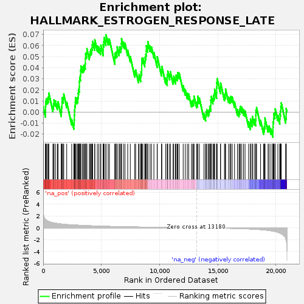
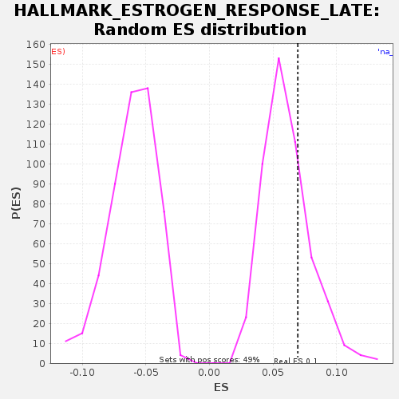

| | | Dataset | GSE18198_base_collapsed |
| Phenotype | NoPhenotypeAvailable |
| Upregulated in class | na_pos |
| GeneSet | HALLMARK_ESTROGEN_RESPONSE_LATE |
| Enrichment Score (ES) | 0.06956054 |
| Normalized Enrichment Score (NES) | 1.144725 |
| Nominal p-value | 0.2798354 |
| FDR q-value | 0.39827615 |
| FWER p-Value | 0.999 |
Table: GSEA Results Summary

Fig 1: Enrichment plot: HALLMARK_ESTROGEN_RESPONSE_LATE
Profile of the Running ES Score & Positions of GeneSet Members on the Rank Ordered List
| SYMBOL | TITLE | RANK IN GENE LIST | RANK METRIC SCORE | RUNNING ES | CORE ENRICHMENT | | 1 | TOB1 | NA | 5 | 2.800 | 0.0048 | Yes |
| 2 | DNAJC1 | NA | 200 | 1.402 | 0.0005 | Yes |
| 3 | DYNLT3 | NA | 204 | 1.391 | 0.0053 | Yes |
| 4 | PLK4 | NA | 216 | 1.367 | 0.0098 | Yes |
| 5 | CDC20 | NA | 277 | 1.267 | 0.0120 | Yes |
| 6 | ELOVL5 | NA | 374 | 1.168 | 0.0124 | Yes |
| 7 | TSPAN13 | NA | 453 | 1.096 | 0.0136 | Yes |
| 8 | TOP2A | NA | 484 | 1.058 | 0.0172 | Yes |
| 9 | SERPINA3 | NA | 839 | 0.859 | 0.0052 | Yes |
| 10 | KIF20A | NA | 892 | 0.839 | 0.0077 | Yes |
| 11 | OPN3 | NA | 928 | 0.824 | 0.0110 | Yes |
| 12 | PLAAT3 | NA | 1051 | 0.785 | 0.0102 | Yes |
| 13 | SCNN1A | NA | 1217 | 0.728 | 0.0073 | Yes |
| 14 | FARP1 | NA | 1280 | 0.709 | 0.0093 | Yes |
| 15 | CHPT1 | NA | 1554 | 0.643 | 0.0012 | Yes |
| 16 | EMP2 | NA | 1579 | 0.637 | 0.0050 | Yes |
| 17 | RET | NA | 1619 | 0.628 | 0.0082 | Yes |
| 18 | ASCL1 | NA | 1624 | 0.627 | 0.0130 | Yes |
| 19 | FRK | NA | 1727 | 0.604 | 0.0131 | Yes |
| 20 | CXCL12 | NA | 1767 | 0.595 | 0.0163 | Yes |
| 21 | ST14 | NA | 2024 | 0.553 | 0.0089 | Yes |
| 22 | CA12 | NA | 2453 | 0.497 | -0.0067 | Yes |
| 23 | FOXC1 | NA | 2635 | 0.474 | -0.0104 | Yes |
| 24 | ID2 | NA | 2668 | 0.469 | -0.0069 | Yes |
| 25 | PRSS23 | NA | 2681 | 0.468 | -0.0024 | Yes |
| 26 | CD44 | NA | 2698 | 0.466 | 0.0018 | Yes |
| 27 | COX6C | NA | 2718 | 0.464 | 0.0059 | Yes |
| 28 | GAL | NA | 2760 | 0.460 | 0.0090 | Yes |
| 29 | TMPRSS3 | NA | 2779 | 0.457 | 0.0131 | Yes |
| 30 | PERP | NA | 2896 | 0.445 | 0.0126 | Yes |
| 31 | GLA | NA | 2984 | 0.440 | 0.0134 | Yes |
| 32 | KRT19 | NA | 3010 | 0.437 | 0.0172 | Yes |
| 33 | JAK2 | NA | 3044 | 0.433 | 0.0207 | Yes |
| 34 | KLF4 | NA | 3106 | 0.425 | 0.0228 | Yes |
| 35 | BTG3 | NA | 3109 | 0.424 | 0.0277 | Yes |
| 36 | FGFR3 | NA | 3135 | 0.422 | 0.0315 | Yes |
| 37 | NMU | NA | 3205 | 0.415 | 0.0332 | Yes |
| 38 | PDLIM3 | NA | 3217 | 0.413 | 0.0377 | Yes |
| 39 | KLK11 | NA | 3241 | 0.411 | 0.0416 | Yes |
| 40 | ARL3 | NA | 3371 | 0.398 | 0.0404 | Yes |
| 41 | SEMA3B | NA | 3463 | 0.387 | 0.0411 | Yes |
| 42 | RAB31 | NA | 3540 | 0.380 | 0.0424 | Yes |
| 43 | BLVRB | NA | 3618 | 0.373 | 0.0437 | Yes |
| 44 | JAK1 | NA | 3624 | 0.373 | 0.0485 | Yes |
| 45 | TPSAB1 | NA | 3640 | 0.372 | 0.0528 | Yes |
| 46 | TFF3 | NA | 3729 | 0.366 | 0.0536 | Yes |
| 47 | FDFT1 | NA | 3758 | 0.364 | 0.0573 | Yes |
| 48 | FOS | NA | 3969 | 0.345 | 0.0522 | Yes |
| 49 | IL17RB | NA | 4026 | 0.340 | 0.0545 | Yes |
| 50 | ALDH3A2 | NA | 4094 | 0.335 | 0.0563 | Yes |
| 51 | LLGL2 | NA | 4173 | 0.329 | 0.0576 | Yes |
| 52 | AFF1 | NA | 4214 | 0.326 | 0.0607 | Yes |
| 53 | CYP26B1 | NA | 4254 | 0.323 | 0.0638 | Yes |
| 54 | PGR | NA | 4426 | 0.310 | 0.0606 | Yes |
| 55 | CYP4F11 | NA | 4437 | 0.309 | 0.0651 | Yes |
| 56 | LAMC2 | NA | 4656 | 0.293 | 0.0597 | Yes |
| 57 | AGR2 | NA | 4784 | 0.286 | 0.0586 | Yes |
| 58 | CCND1 | NA | 4927 | 0.275 | 0.0567 | Yes |
| 59 | AREG | NA | 4957 | 0.272 | 0.0604 | Yes |
| 60 | OLFM1 | NA | 5156 | 0.261 | 0.0559 | Yes |
| 61 | KLK10 | NA | 5158 | 0.261 | 0.0608 | Yes |
| 62 | PTGER3 | NA | 5207 | 0.258 | 0.0635 | Yes |
| 63 | HMGCS2 | NA | 5237 | 0.256 | 0.0672 | Yes |
| 64 | CAV1 | NA | 5389 | 0.249 | 0.0649 | Yes |
| 65 | IL6ST | NA | 5398 | 0.249 | 0.0696 | Yes |
| 66 | SLC2A8 | NA | 5584 | 0.239 | 0.0657 | No |
| 67 | SERPINA1 | NA | 5689 | 0.233 | 0.0657 | No |
| 68 | SLC24A3 | NA | 6161 | 0.208 | 0.0480 | No |
| 69 | RPS6KA2 | NA | 6162 | 0.208 | 0.0530 | No |
| 70 | MAPK13 | NA | 6252 | 0.204 | 0.0538 | No |
| 71 | NCOR2 | NA | 6342 | 0.199 | 0.0545 | No |
| 72 | ABHD2 | NA | 6356 | 0.199 | 0.0589 | No |
| 73 | ANXA9 | NA | 6522 | 0.191 | 0.0560 | No |
| 74 | TFPI2 | NA | 6571 | 0.188 | 0.0587 | No |
| 75 | SLC27A2 | NA | 6676 | 0.184 | 0.0587 | No |
| 76 | CALCR | NA | 6717 | 0.183 | 0.0618 | No |
| 77 | PAPSS2 | NA | 6730 | 0.183 | 0.0662 | No |
| 78 | PTGES | NA | 6903 | 0.175 | 0.0630 | No |
| 79 | HPRT1 | NA | 7029 | 0.171 | 0.0620 | No |
| 80 | PDCD4 | NA | 7264 | 0.162 | 0.0557 | No |
| 81 | TPD52L1 | NA | 7486 | 0.153 | 0.0501 | No |
| 82 | DCXR | NA | 7871 | 0.139 | 0.0366 | No |
| 83 | TRIM29 | NA | 7948 | 0.136 | 0.0380 | No |
| 84 | XBP1 | NA | 8189 | 0.127 | 0.0314 | No |
| 85 | CD9 | NA | 8244 | 0.125 | 0.0339 | No |
| 86 | ALDH3B1 | NA | 8379 | 0.120 | 0.0324 | No |
| 87 | TFAP2C | NA | 8403 | 0.119 | 0.0363 | No |
| 88 | ACOX2 | NA | 8466 | 0.117 | 0.0384 | No |
| 89 | HR | NA | 8469 | 0.117 | 0.0433 | No |
| 90 | MAPT | NA | 8472 | 0.117 | 0.0482 | No |
| 91 | MYOF | NA | 8566 | 0.115 | 0.0488 | No |
| 92 | TPBG | NA | 8732 | 0.110 | 0.0459 | No |
| 93 | SULT2B1 | NA | 8762 | 0.109 | 0.0495 | No |
| 94 | SGK1 | NA | 8816 | 0.107 | 0.0520 | No |
| 95 | SCARB1 | NA | 8857 | 0.106 | 0.0551 | No |
| 96 | DNAJC12 | NA | 8862 | 0.105 | 0.0599 | No |
| 97 | TFF1 | NA | 8984 | 0.102 | 0.0591 | No |
| 98 | PRLR | NA | 8998 | 0.101 | 0.0635 | No |
| 99 | NRIP1 | NA | 9186 | 0.097 | 0.0595 | No |
| 100 | PDZK1 | NA | 9306 | 0.093 | 0.0588 | No |
| 101 | STIL | NA | 9515 | 0.087 | 0.0538 | No |
| 102 | CXCL14 | NA | 9794 | 0.079 | 0.0454 | No |
| 103 | SERPINA5 | NA | 9806 | 0.079 | 0.0499 | No |
| 104 | CA2 | NA | 10166 | 0.068 | 0.0376 | No |
| 105 | SOX3 | NA | 10196 | 0.068 | 0.0413 | No |
| 106 | MEST | NA | 10521 | 0.058 | 0.0307 | No |
| 107 | GPER1 | NA | 10659 | 0.055 | 0.0291 | No |
| 108 | NBL1 | NA | 10666 | 0.055 | 0.0338 | No |
| 109 | S100A9 | NA | 10705 | 0.054 | 0.0370 | No |
| 110 | DLG5 | NA | 10871 | 0.049 | 0.0341 | No |
| 111 | MICB | NA | 10927 | 0.048 | 0.0365 | No |
| 112 | SLC26A2 | NA | 11162 | 0.042 | 0.0302 | No |
| 113 | LTF | NA | 11223 | 0.041 | 0.0323 | No |
| 114 | CDH1 | NA | 11369 | 0.037 | 0.0304 | No |
| 115 | TIAM1 | NA | 11416 | 0.036 | 0.0332 | No |
| 116 | METTL3 | NA | 11518 | 0.033 | 0.0333 | No |
| 117 | CPE | NA | 11574 | 0.032 | 0.0357 | No |
| 118 | AMFR | NA | 11692 | 0.030 | 0.0351 | No |
| 119 | OVOL2 | NA | 12031 | 0.023 | 0.0238 | No |
| 120 | LARGE1 | NA | 12209 | 0.020 | 0.0203 | No |
| 121 | IDH2 | NA | 12385 | 0.016 | 0.0169 | No |
| 122 | RAPGEFL1 | NA | 12504 | 0.014 | 0.0163 | No |
| 123 | KRT13 | NA | 12746 | 0.009 | 0.0097 | No |
| 124 | CLIC3 | NA | 12843 | 0.007 | 0.0101 | No |
| 125 | HSPB8 | NA | 12929 | 0.004 | 0.0110 | No |
| 126 | DHCR7 | NA | 12964 | 0.004 | 0.0144 | No |
| 127 | TH | NA | 13183 | -0.000 | 0.0089 | No |
| 128 | ZFP36 | NA | 13271 | -0.001 | 0.0097 | No |
| 129 | BCL2 | NA | 13279 | -0.002 | 0.0144 | No |
| 130 | FKBP5 | NA | 13420 | -0.004 | 0.0127 | No |
| 131 | IGSF1 | NA | 13818 | -0.013 | -0.0014 | No |
| 132 | PCP4 | NA | 13957 | -0.016 | -0.0030 | No |
| 133 | ETFB | NA | 13994 | -0.017 | 0.0003 | No |
| 134 | CKB | NA | 14055 | -0.018 | 0.0024 | No |
| 135 | WFS1 | NA | 14186 | -0.021 | 0.0012 | No |
| 136 | FKBP4 | NA | 14267 | -0.022 | 0.0023 | No |
| 137 | ST6GALNAC2 | NA | 14313 | -0.023 | 0.0052 | No |
| 138 | CACNA2D2 | NA | 14404 | -0.025 | 0.0059 | No |
| 139 | SFN | NA | 14406 | -0.025 | 0.0108 | No |
| 140 | HOMER2 | NA | 14444 | -0.026 | 0.0141 | No |
| 141 | PRKAR2B | NA | 14585 | -0.029 | 0.0124 | No |
| 142 | ASS1 | NA | 14641 | -0.030 | 0.0147 | No |
| 143 | GJB3 | NA | 14711 | -0.032 | 0.0164 | No |
| 144 | PKP3 | NA | 14730 | -0.032 | 0.0206 | No |
| 145 | SCUBE2 | NA | 14903 | -0.038 | 0.0173 | No |
| 146 | IGFBP4 | NA | 14907 | -0.038 | 0.0222 | No |
| 147 | GINS2 | NA | 14919 | -0.038 | 0.0267 | No |
| 148 | CHST8 | NA | 14951 | -0.039 | 0.0302 | No |
| 149 | TNNC1 | NA | 15233 | -0.049 | 0.0217 | No |
| 150 | PLXNB1 | NA | 15247 | -0.050 | 0.0261 | No |
| 151 | BAG1 | NA | 15578 | -0.062 | 0.0152 | No |
| 152 | NXT1 | NA | 15652 | -0.066 | 0.0167 | No |
| 153 | EGR3 | NA | 15673 | -0.066 | 0.0208 | No |
| 154 | SLC1A4 | NA | 15931 | -0.079 | 0.0134 | No |
| 155 | GALE | NA | 16050 | -0.083 | 0.0128 | No |
| 156 | PLAC1 | NA | 16129 | -0.087 | 0.0141 | No |
| 157 | ADD3 | NA | 16243 | -0.093 | 0.0136 | No |
| 158 | CELSR2 | NA | 16442 | -0.101 | 0.0091 | No |
| 159 | CCN5 | NA | 16693 | -0.114 | 0.0021 | No |
| 160 | CISH | NA | 16827 | -0.121 | 0.0007 | No |
| 161 | FAM102A | NA | 16889 | -0.125 | 0.0028 | No |
| 162 | ATP2B4 | NA | 16944 | -0.128 | 0.0052 | No |
| 163 | TJP3 | NA | 17065 | -0.136 | 0.0045 | No |
| 164 | ITPK1 | NA | 17217 | -0.148 | 0.0022 | No |
| 165 | NPY1R | NA | 17348 | -0.158 | 0.0010 | No |
| 166 | SNX10 | NA | 17652 | -0.182 | -0.0086 | No |
| 167 | SLC22A5 | NA | 17803 | -0.197 | -0.0108 | No |
| 168 | TST | NA | 17812 | -0.198 | -0.0062 | No |
| 169 | RNASEH2A | NA | 17958 | -0.211 | -0.0081 | No |
| 170 | DUSP2 | NA | 17976 | -0.212 | -0.0039 | No |
| 171 | CCNA1 | NA | 18136 | -0.230 | -0.0066 | No |
| 172 | LSR | NA | 18256 | -0.242 | -0.0073 | No |
| 173 | MOCS2 | NA | 18272 | -0.245 | -0.0030 | No |
| 174 | RABEP1 | NA | 18277 | -0.246 | 0.0018 | No |
| 175 | ABCA3 | NA | 18335 | -0.252 | 0.0041 | No |
| 176 | NAB2 | NA | 18680 | -0.300 | -0.0074 | No |
| 177 | FLNB | NA | 18942 | -0.344 | -0.0150 | No |
| 178 | SIAH2 | NA | 19004 | -0.358 | -0.0129 | No |
| 179 | UGDH | NA | 19053 | -0.368 | -0.0102 | No |
| 180 | XRCC3 | NA | 19055 | -0.369 | -0.0052 | No |
| 181 | HSPA4L | NA | 19322 | -0.427 | -0.0130 | No |
| 182 | SORD | NA | 19418 | -0.450 | -0.0126 | No |
| 183 | RBBP8 | NA | 19577 | -0.496 | -0.0151 | No |
| 184 | SLC7A5 | NA | 19733 | -0.547 | -0.0176 | No |
| 185 | UNC13B | NA | 19747 | -0.552 | -0.0132 | No |
| 186 | MDK | NA | 19758 | -0.558 | -0.0086 | No |
| 187 | MYB | NA | 19803 | -0.578 | -0.0057 | No |
| 188 | BATF | NA | 19816 | -0.583 | -0.0013 | No |
| 189 | PTPN6 | NA | 19914 | -0.621 | -0.0009 | No |
| 190 | SLC29A1 | NA | 19938 | -0.628 | 0.0030 | No |
| 191 | ISG20 | NA | 20166 | -0.754 | -0.0029 | No |
| 192 | PPIF | NA | 20332 | -0.881 | -0.0059 | No |
| 193 | SLC16A1 | NA | 20347 | -0.893 | -0.0015 | No |
| 194 | IMPA2 | NA | 20395 | -0.942 | 0.0012 | No |
| 195 | DHRS2 | NA | 20419 | -0.958 | 0.0052 | No |
| 196 | SLC9A3R1 | NA | 20457 | -0.999 | 0.0084 | No |
| 197 | CDC6 | NA | 20838 | -1.785 | -0.0049 | No |
| 198 | KCNK5 | NA | 20879 | -2.091 | -0.0018 | No |
| 199 | FABP5 | NA | 20881 | -2.091 | 0.0032 | No |
Table: GSEA details [plain text format]

Fig 2: HALLMARK_ESTROGEN_RESPONSE_LATE: Random ES distribution
Gene set null distribution of ES for HALLMARK_ESTROGEN_RESPONSE_LATE